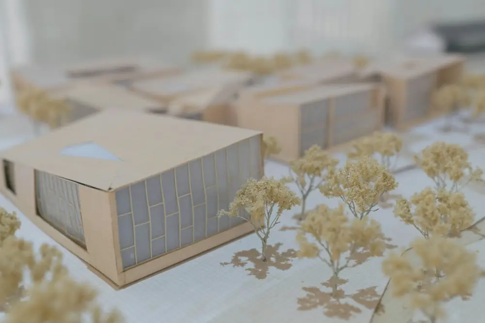
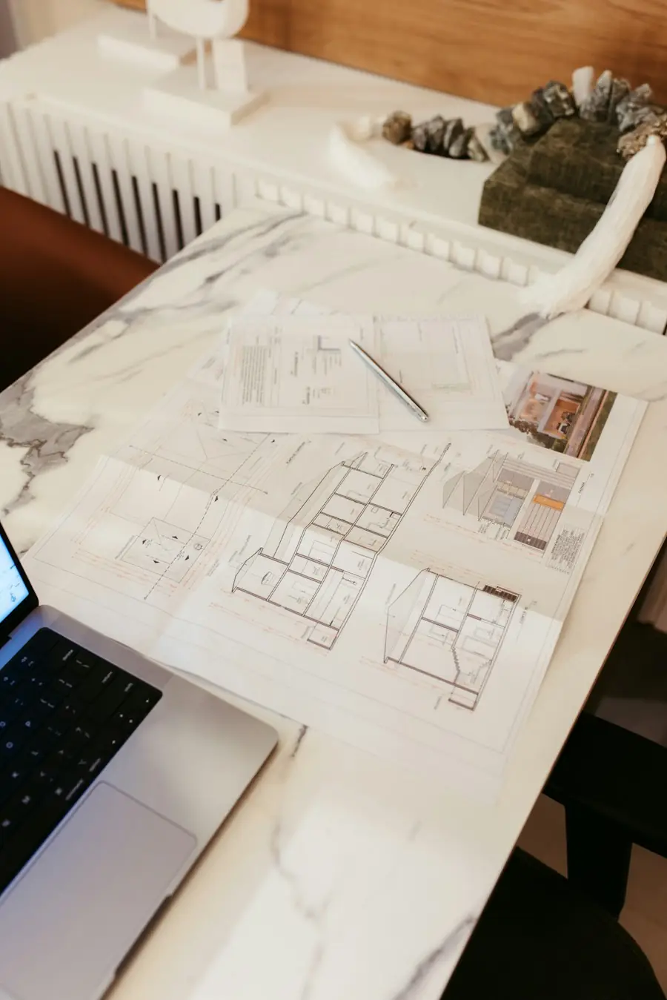

模型と図面で、
いっしょに考える
打ち合わせでは、毎回小さな模型と図面を用意します。光の入り方や木の位置を、手に取って確かめられます。


作品
できあがった建物で何が変わったかを、最初に書いています。
みほん台の平屋
LDKを南に一列に並べ、冬の日中は暖房をほとんど使わなくなりました。
共働きの4人家族の家。廊下をなくし、どの部屋からも庭が見えるようにしています。
角地のベーカリー＆2階住居
ガラスの正面で店の中が外から見え、開店後の新規客が想定の1.5倍に。
1階が店、2階が店主の住まい。庇の下で、雨の日も待ち時間を過ごせます。
築70年の町家の改修
暗かった土間に天窓から光が落ち、昼間は照明なしで過ごせるように。
天井を外して古い梁を見せ、耐震補強と断熱をあわせて行いました。
商店街の小さなカフェ
カウンターを長くとり、1人で営む店主が全席を見渡せる配置に。
空き店舗の内装を改修。工事費を抑えるため、既存の床と天井を活かしました。
設計で大切にしていること
- A
まず、いまの暮らしを聞く
朝起きてから寝るまでの動きや、困っていることを伺います。間取りの答えは、たいていその中にあります。
- B
大きさより、配置と光
床面積を増やすより、窓の位置と部屋のつながりを整えるほうが、広く感じて工事費も抑えられます。
- C
予算は最初に、正直に
設計の前に工事費の目安を一緒に決め、模型と図面で確認しながら、予算の中で何を優先するかを決めます。
- D
工事中も現場に通う
図面どおりに進んでいるか、週に1回は現場で確認します（監理）。変更が出たときの相談も、その場で。
設計の流れと設計料
はじめての方にもわかるように、期間と費用の目安をまとめています。
ご相談・敷地の確認
初回60分は無料。土地や建物を一緒に見に行きます。
ご提案（プラン・概算）
間取りと模型、工事費の概算をお見せします。
設計・工事・お引き渡し
図面を描き、工務店を選び、工事を見守ります。
相談してみる
「まだ土地も決まっていない」「リフォームと建て替え、どちらがいいかわからない」という段階からのご相談がいちばん多いです。事務所・オンライン・現地のどれでも、お気軽にどうぞ。